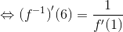
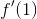
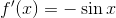
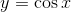
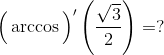

Derivarea funcției inverse
Teorema FD9: Derivarea funcției inverse
Fie funcția , cu intervale,  continuă și bijectivă. Dacă funcția este derivabilă în punctul
continuă și bijectivă. Dacă funcția este derivabilă în punctul  și , atunci funcția este derivabilă în punctul
și , atunci funcția este derivabilă în punctul  și are loc relația:
și are loc relația:
.
Exemple:
Fie funcția  , . Să se calculeze derivata inversei acestei funcții în punctul .
, . Să se calculeze derivata inversei acestei funcții în punctul .
Rezolvare:
Funcția dată este bijectivă și derivabilă (fiind compunerea unor funcții elementare), deci inversabilă.
Așadar, există derivabilă în punctul , unde .
Avem:
Se observă că o rădăcină (rădăcina reală) a acestei ecuații este  .
.
Atunci, aplicând Teorema FD9, avem că:
.
Calculăm derivata funcției . (Folosim derivatele funcțiilor elementare și operațiile cu funcții derivabile studiate în secțiunile anterioare.)
 .
.
Atunci,  este:
.
 .
.
Derivatele funcțiilor trigonometrice inverse
În continuare, determinăm formulele derivatelor pentru funcțiile trigonometrice inverse arcsinus, arccosinus, arctangentă și arccotangentă.
Derivata funcției arcsinus
Funcția este restricția bijectivă a funcției sinus. În plus, acestă funcție este continuă și derivabilă și . (Derivata funcției sinus s-a calculat în secțiunea anterioară.)
Funcția inversă este , .
Aplicând Teorema FD9 pe intervalul deschis  , obținem:
, obținem:

 .
.
Derivata funcției arccosinus
Funcția este restricția bijectivă a funcției cosinus. În plus, funcția dată este continuă și derivabilă, iar derivata sa este . (Derivata funcției cosinus s-a calculat în secțiunea anterioară.)
Funcția inversă este , .
Aplicând Teorema FD9 pe intervalul deschis , obținem:
.
Derivata funcției arctangentă
Funcția îndeplinește condițiile din Teorema FD9 (derivata sa este  sau
sau  ). Așadar, funcția este derivabilă în orice punct și derivata funcției este:
). Așadar, funcția este derivabilă în orice punct și derivata funcției este:
Derivata funcției arccotangentă
Fie funcția cotangentă continuă, bijectivă și derivabilă, având derivata  sau Inversa funcției este , aceasta fiind derivabilă în orice punct
sau Inversa funcției este , aceasta fiind derivabilă în orice punct  , derivata funcției fiind:
, derivata funcției fiind:
.
Exemple:
Aplicând formula  pentru , obținem:
pentru , obținem:
.
- 
Aplicăm formula pentru  și obținem:
și obținem:

.
Folosind formula pentru  , vom obține:
, vom obține:
.
Folosim formula pentru și rezultă:
.